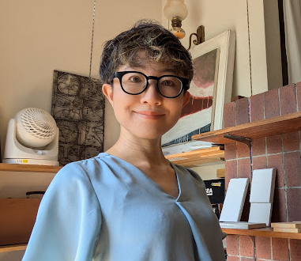

私たちの想い
「ちとせメタバースデザイン」が大切にする、家族と未来へのメッセージ。
建築士を、使い倒せ。
プロの技術とDIYの遊び心で、一生モノの「家づくりイベント」を。

こんにちは！二級建築士の阿部由紀子（あべ ゆきこ）です。
数あるサイトの中から見つけてくださり、ありがとうございます。🏡✨
「せっかくの家づくり、人任せにするのはもったいない」「自分でも手を動かして、こだわりを形にしたい」
もしあなたがそう考えているなら、私は、あなたにとって最高の「伴侶」になれる自信があります。
なぜなら、私自身が「つくること」への執着が人一倍強く、そして「プロを使い倒す楽しさ」を知っている人間だからです。
遊園地の設計から、暮らしの設計へ
私のモノづくりの原点は、遊園地の遊戯機器メーカーにありました。
ナガシマスパーランドやハウステンボスの観覧車など、「人を笑顔にする巨大な装置」の設計に10年間没頭してきました。ドイツやポーランドの技術者と、ミリ単位の精度と安全性を求めて格闘した日々は、私の「安全に対する厳しい目」を養ってくれました。
その後、独学で二級建築士の資格を取得し、建築の世界へ。
機械設計で培った「動くものの理屈」と、建築の「居心地の良さ」を掛け合わせ、BIM（ArchiCAD）という3Dソフトを駆使して、あなたの頭の中にある「わがまま」を瞬時に可視化します。
「理想」と「現実」の間にある、DIYのドラマ
私は、自分自身の家もDIYでリノベーションしています。断熱材を入れ、耐震補強まで自分で行うほど、実はかなりの「DIYガチ勢」です。
正直に言います。DIYは、楽なことばかりではありません。
想定外の隙間に頭を抱えたり、予算が削られて途方に暮れたりすることもあります。でも、そんなトラブルさえも「どう解決してやろうか！」とニヤリとしてしまうのが、モノづくりの醍醐味です。
私を「便利な道具」として使う、3つのメリット
- 「見えない」不安をゼロにする：
ArchiCADによる3Dパースで、完成後のイメージを共有します。平面図ではわからない「光の入り方」や「家事動線」も、建てる前に体験してください。 - 「プロの安全」×「DIYの自由度」：
遊園地設計仕込みの安全管理をベースに、あなたがDIYで手を動かせる「余白」を設計します。壊してはいけない壁、自分で塗れる壁、その見極めはお任せを。
あなたの「わがまま」を、一緒に面白がりたい
建築士は、先生ではありません。
あなたの夢というイベントを、技術とアイデアで支える「最強の裏方」であり、便利な「道具」です。
「こんなこと言ったら笑われるかな？」というようなこだわりこそ、ぜひ聞かせてください。
予算との格闘も、DIYの筋肉痛も、全部ひっくるめて最高の思い出にしていきましょう。
あなたの人生をかけた「本気の遊び」、一緒に形にできる日を楽しみにしています！🤝✨
ちとせメタバースデザイン合同会社 代表 / 二級建築士
阿部 由紀子